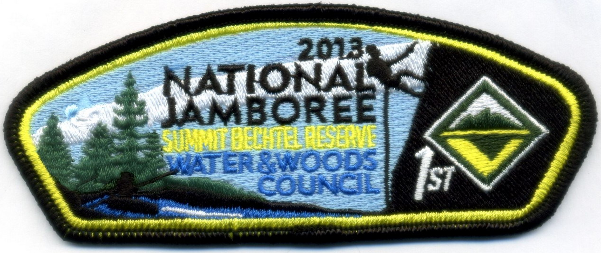
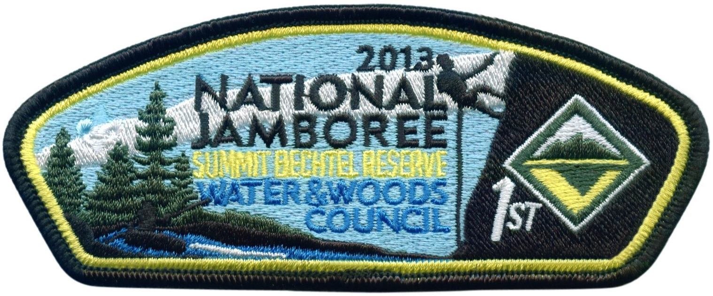
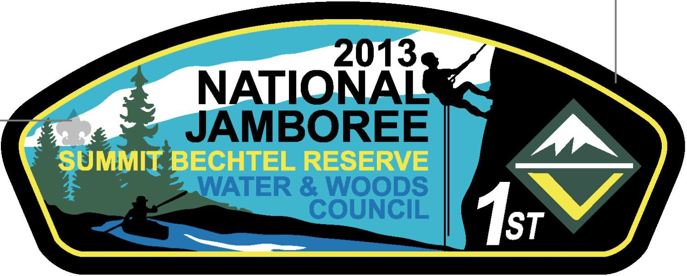
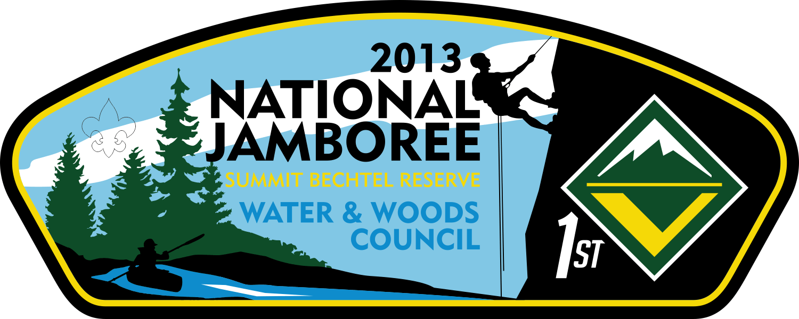
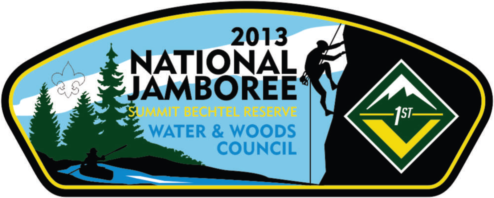

F510c JSP progression
Click here for our PatchScan.com page
 |
5/8 - Received! Scanned by Tim |
||
 |
4/19 - Second Stitch out This is what we are going with! |
 |
4/18 - First Stitch out Asked them to
|
 |
4/5 - sent to AB Emblem 3rd Art Modified font and removed some of the details that were too fine to embroider. |
||
 |
AB Emblem redrawing of 2nd Art They needed to redraw to verify elements could be embroidered... We rejected the new art
|
||
 |
2nd Art Approved by BSA! |
 |
Original Art by UgliPaul Rejected by BSA because of the modified Venture logo and climber too close to Jambo art. |
This is a listing (bottom to top) of the major steps we went through to get our JSP.
Right click & View Image to see a larger version.